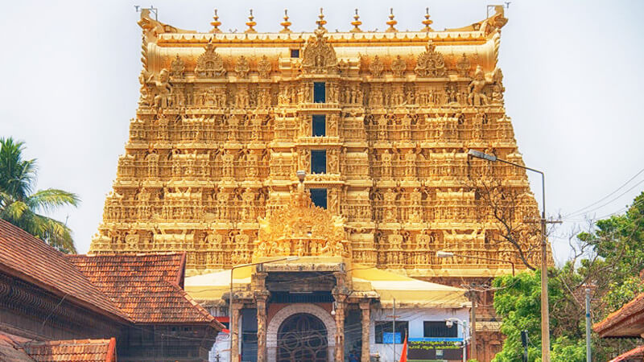
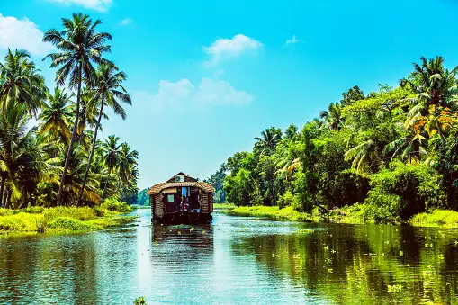
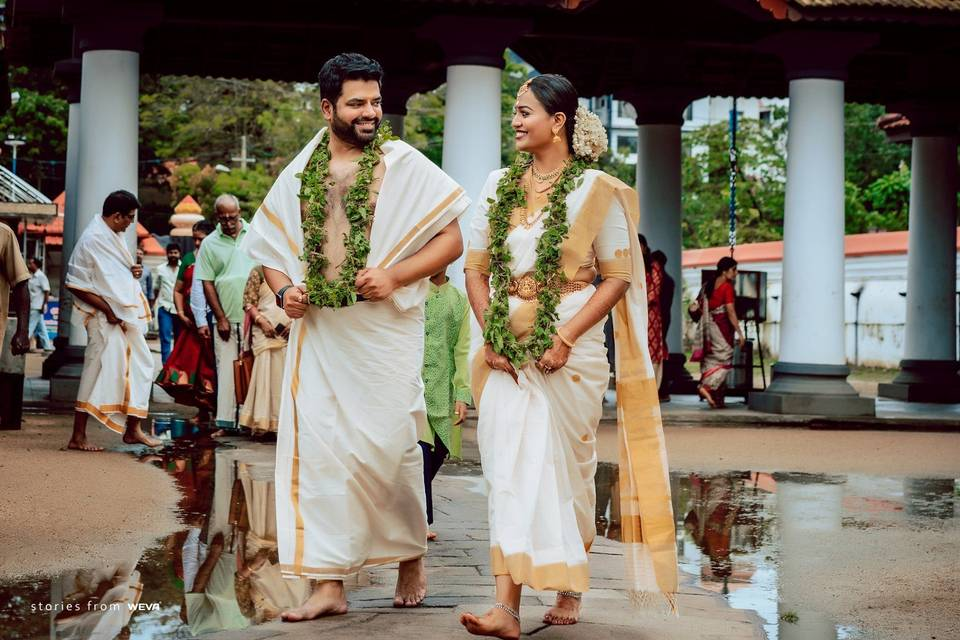
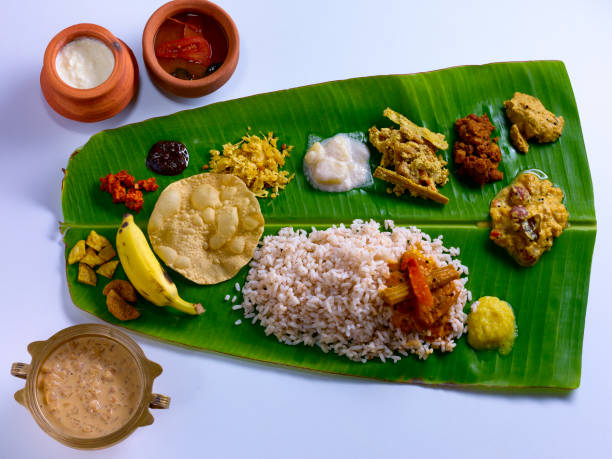

| ✧ Aspect | Information |
|---|---|
| ✧ Capital | Thiruvananthapuram |
| ✧ Chief minister | Pinarayi Vijayan |
| ✧ Largest City | Thiruvananthapuram |
| ✧ Districts | 14 |
| ✧ Official Language | Malayalam |
| ✧ Other Language | Tamil, Tulu, Kannada, Gujrati, and English |
| ✧ Population | Approximately 35 million |
| ✧ Area | 38,863 square kilometers |
| ✧ Major Rivers | Periyar, Bharathappuzha, Pamba |
| ✧ Major Industries | Coconut, Spices, Tourism |
| ✧ Popular Places | Backwaters of Alleppey, Munnar Hill Station, Fort Kochi, Kovalam Beach |
Traditional Dresses in Kerala includes the Mundu for men, which is a piece of cloth wrapped around the waist and draped over the shoulders, and for women, it is the traditional saree called Kasavu saree, usually white or cream in color with golden borders.
Kerala, located on the southwestern coast of India, has a history dating back to ancient times. The region has been a melting pot of cultures and civilizations, contributing to its rich heritage.
Ancient Kerala was inhabited by various indigenous tribes and was a major center of trade and commerce due to its strategic location along the Arabian Sea coast. The region attracted traders from across the world, including the Greeks, Romans, Arabs, and Chinese.
Kerala's history is characterized by the influence of various dynasties such as the Cheras, Cholas, and Pandyas. These dynasties played a crucial role in shaping the culture, language, and traditions of the region.
Kerala also has a rich tradition of art, literature, and architecture. The state is known for its classical dance forms like Kathakali and Mohiniyattam, as well as its vibrant festivals such as Onam and Vishu.
In the medieval period, Kerala witnessed the rise of powerful kingdoms like the Zamorins of Calicut and the Travancore royal family. These kingdoms patronized art, literature, and trade, contributing to Kerala's prosperity and cultural richness.
Kerala was also a major center of maritime trade, with ports like Kochi and Kozhikode attracting merchants from around the world. The state's spice trade with foreign countries earned it the nickname "Spice Garden of India."
After India gained independence in 1947, Kerala became a state of the Indian Union. Today, Kerala is known for its scenic beauty, diverse culture, and high literacy rate, making it one of the most progressive states in India.



